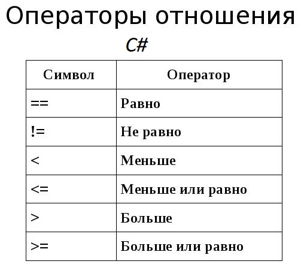

Операции отношения
Операции отношения выполняют
сравнение двух операндов и
определяют, истинно значение или
ложно. Сравниваемые величины
могут принадлежать к любому типу
данных, и результат всегда имеет
логический тип, принимая одно
значение из двух: истина или
ложь.
В Паскаль
|
Операция
|
Название
|
Выражение
|
|
=
|
Равно
|
А=В
|
|
<>
|
Неравно
|
А<>B
|
|
>
|
Больше
|
A>B
|
|
<
|
Меньше
|
A<B
|
|
>=
|
Больше или равно
|
A>=B
|
|
<=
|
Меньше или равно
|
A<=B
|
Отдельный набор операций
представляет условные выражения.
Такие операции возвращают
логическое значение, то есть
значение типа bool: true, если
выражение истинно, и false, если
выражение ложно. К подобным
операциям относятся операции
сравнения и логические операции.
Операторы сравнения в С#:

Операции сравнения
В операциях сравнения
сравниваются два операнда и
возвращается значение типа bool
- true, если выражение верно, и
false, если выражение неверно.
Сравнивает два операнда
на равенство.
Если они равны, то операция
возвращает true, если не равны,
то возвращается false:
int a = 10;
int b = 4;
bool c = a
== b; // false
!=
Сравнивает два операнда и
возвращает true, если операнды
не равны, и
false, если они равны.
int a = 10;
int b = 4;
bool c = a
!= b; // true
bool d = a!=10; // false
<
Операция "меньше чем". Возвращает
true, если первый операнд меньше
второго, и false, если первый
операнд больше второго:
int a = 10;
int b = 4;
bool c = a < b; // false
>
Операция "больше чем". Сравнивает
два операнда и возвращает true,
если первый операнд больше
второго, иначе возвращает false:
int a = 10;
int b = 4;
bool c = a > b; // true
bool d = a > 25; // false
<=
Операция "меньше или
равно". Сравнивает
два операнда и возвращает true,
если первый операнд меньше или
равен второму. Иначе возвращает
false.
int a = 10;
int b = 4;
bool c = a <= b; // false
bool d = a <= 25; // true
>=
Операция "больше или
равно". Сравнивает
два операнда и возвращает true,
если первый операнд больше или
равен второму, иначе
возвращается false:
int a = 10;
int b = 4;
bool c = a >= b; // true
bool d = a >= 25; // false
Операции <, > <=, >= имеют
больший приоритет, чем == и !=.
Логические операции
Также в C# определены логические
операторы, которые также
возвращают значение типа bool. В
качестве операндов они принимают
значения типа bool. Как правило,
применяются к отношениям и
объединяют несколько операций
сравнения.
Операция логического
сложения или логическое ИЛИ.
Возвращает true, если хотя бы
один из операндов возвращает
true.
bool x1 = (5 > 6) | (4 < 6);
// 5 > 6 - false, 4 < 6 - true,
поэтому возвращается true
bool x2 = (5 > 6) | (4 > 6); //
5 > 6 - false, 4 > 6 - false,
поэтому возвращается false
&
Операция логического
умножения или логическое И.
Возвращает true, если оба
операнда одновременно равны
true.
bool x1 = (5 > 6) & (4 < 6);
// 5 > 6 - false, 4 < 6 - true,
поэтому возвращается false
bool x2 = (5 < 6) & (4 < 6); //
5 < 6 - true, 4 < 6 - true,
поэтому возвращается true
||
Операция логического
сложения. Возвращает
true, если хотя бы один из
операндов возвращает true.
bool x1 = (5 > 6) || (4 < 6);
// 5 > 6 - false, 4 < 6 - true,
поэтому возвращается true
bool x2 = (5 > 6) || (4 > 6); //
5 > 6 - false, 4 > 6 - false,
поэтому возвращается false
&&
Операция логического
умножения. Возвращает
true, если оба операнда
одновременно равны true.
bool x1 = (5 > 6) && (4 < 6);
// 5 > 6 - false, 4 < 6 - true,
поэтому возвращается false
bool x2 = (5 < 6) && (4 < 6); //
5 < 6 - true, 4 < 6 - true,
поэтому возвращается true
!
Операция логического
отрицания. Производится
над одним операндом и возвращает
true, если операнд равен false.
Если операнд равен true, то
операция возвращает false:
bool a = true;
bool b = !a; // false
^
Операция исключающего
ИЛИ. Возвращает
true, если либо первый, либо
второй операнд (но не
одновременно) равны true, иначе
возвращает false
bool x5 = (5 > 6) ^ (4 < 6); //
5 > 6 - false, 4 < 6 - true,
поэтому возвращается true
bool x6 = (50 > 6) ^ (4 / 2 <
3); // 50 > 6 - true, 4/2 < 3 -
true, поэтому возвращается false
Здесь у нас две пары операций |
и || (а также & и &&) выполняют
похожие действия, однако же они
не равнозначны.
В выражении z=x|y; будут
вычисляться оба значения - x и
y.
В выражении же z=x||y;
сначала будет вычисляться
значение x, и если оно равно
true, то вычисление значения y
уже смысла не имеет, так как у
нас в любом случае уже z будет
равно true. Значение y будет
вычисляться только в том случае,
если x равно false
То же самое касается пары
операций &/&&. В выражении
z=x&y; будут вычисляться оба
значения - x и y.
В выражении же z=x&&y;
сначала будет вычисляться
значение x, и если оно равно
false, то вычисление значения y
уже смысла не имеет, так как у
нас в любом случае уже z будет
равно false. Значение y будет
вычисляться только в том случае,
если x равно true
Поэтому операции || и &&
более удобны в вычислениях, так
как позволяют сократить время на
вычисление значения выражения, и
тем самым повышают
производительность. А операции |
и & больше подходят для
выполнения поразрядных операций
над числами.
| Оператор |
Описание |
Примеры |
| == |
Проверяет равны ли оба операнда. Если да, то условие становится истинным. |
5 == 5 в результате будет True
True == False в результате будет False
"hello" == "hello" в результате будет True |
| != |
Проверяет равны ли оба операнда. Если нет, то условие становится истинным. |
12 != 5 в результате будет True
False != False в результате будет False
"hi" != "Hi" в результате будет True |
| <> |
Проверяет равны ли оба операнда. Если нет, то условие становится истинным. |
12 <> 5 в результате будет True. Похоже на оператор !=
|
| > |
Проверяет больше ли значение левого операнда, чем значение правого. Если да, то условие становится истинным. |
5 > 2 в результате будет True.
True > False в результате будет True.
"A" > "B" в результате будет False. |
| < |
Проверяет меньше ли значение левого операнда, чем значение правого. Если да, то условие становится истинным. |
3 < 5 в результате будет True.
True < False в результате будет False.
"A" < "B" в результате будет True. |
| >= |
Проверяет больше или равно значение левого операнда, чем значение правого. Если да, то условие становится истинным. |
1 >= 1 в результате будет True.
23 >= 3.2 в результате будет True.
"C" >= "D" в результате будет False. |
| <= |
Проверяет меньше или равно значение левого операнда, чем значение правого. Если да, то условие становится истинным. |
4 <= 5 в результате будет True.
0 <= 0.0 в результате будет True.
-0.001 <= -36 в результате будет False. |
|